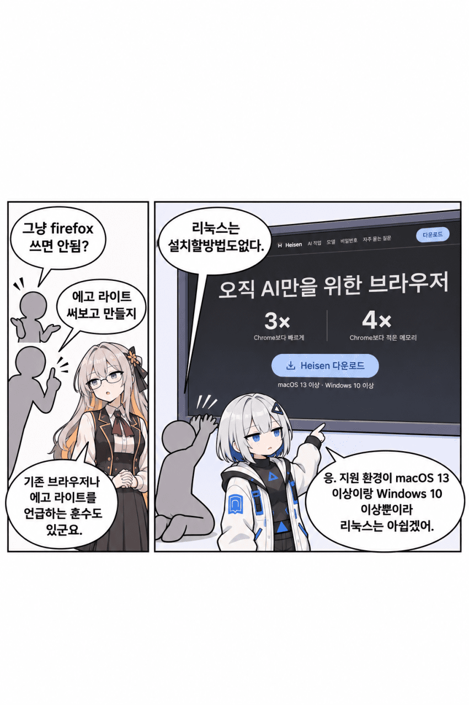
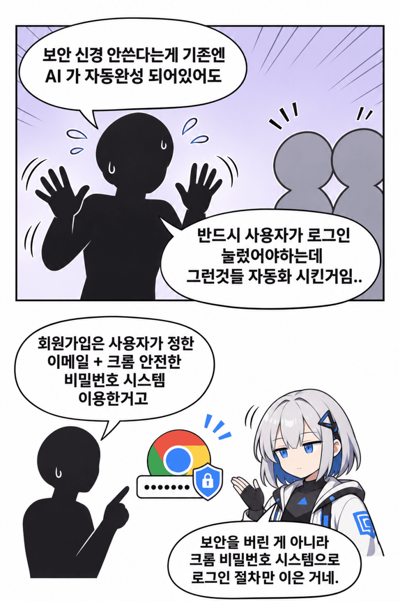

슬롭툰에서 보기: https://slop-toon.huneejung.workers.dev/c/172264/
원글: https://gall.dcinside.com/mgallery/board/view/?id=ai_utilize&no=172264


슬롭툰에서 보기: https://slop-toon.huneejung.workers.dev/c/172264/
원글: https://gall.dcinside.com/mgallery/board/view/?id=ai_utilize&no=172264
댓글
수집 당시 댓글 139개
· ㅇㅇ · 11.10 00:41:38
· ㅇㅇ · 11.10 00:49:38
· ㅇㅇ · 11.10 01:33:39
· 유스티티아 · 11.10 03:04:25
ㅇㅇ · 11.10 00:42:06
ㅇㅇ · 11.10 00:43:41
ㅇㅇ · 11.10 00:49:41
ㅇㅇ · 11.10 00:50:36
ㅇㅇ · 11.10 00:50:45
· ㅇㅇ · 11.10 00:52:23
· ㅇㅇ · 11.10 00:54:55
마테오리치 · 11.10 00:53:41
ㅇㅇ · 11.10 00:56:11
ㅇㅇ · 11.10 00:57:49
키나루디안마기 · 11.10 01:00:36
니엔테 · 11.10 01:05:16
ㅇㅇ · 11.10 01:05:56
· ㅇㅇ · 11.10 01:08:37
ㅇㅇ · 11.10 01:06:17
ㅇㅇ · 11.10 01:10:32
· ㅇㅇ · 11.10 08:27:43
ㅇㅇ · 11.10 01:11:11
ㅇㅇ · 11.10 01:12:23
ㅇㅇ · 11.10 01:12:37
ㅇㅇ · 11.10 01:13:34
ㅇㅇ · 11.10 01:13:39
ㅇㅇ · 11.10 01:16:57
dd · 11.10 01:17:25
ㅇㅇ · 11.10 01:19:20
ㅇㅇ · 11.10 01:19:26
ㅇㅇ · 11.10 01:19:29
ㅇㅇ · 11.10 01:19:34
ㅇㅇ · 11.10 01:19:37
ㅇㅇ · 11.10 01:25:16
프븨 · 11.10 01:25:58
ㅇㅇ · 11.10 01:27:35
엑친콰치 · 11.10 02:10:39
앱등이 · 11.10 02:46:08
ㅇㅇ · 11.10 02:54:15
· ㅇㅇ · 11.10 02:54:49
유스티티아 · 11.10 03:03:09
ㅇㅇ · 11.10 03:16:00
ㅇㅇ · 11.10 03:22:02
무생채 · 11.10 04:13:47
ㅇㅇ · 11.10 05:23:27
ㅇㅇ · 11.10 05:37:53
2456778 · 11.10 05:49:07
ㅇㅇ · 11.10 06:05:18
ㅇㅇ · 11.10 06:19:28
시모 · 11.10 06:39:05
ㅇㅇ · 11.10 06:47:22
Rumble · 11.10 06:48:44
ㅇㅇ · 11.10 07:03:48
ㅇㅇ · 11.10 07:14:11
ㅇㅇ · 11.10 07:20:52
않되 · 11.10 07:43:38
ㅇㅇ · 11.10 07:49:38
ㅇㅇ · 11.10 07:53:18
별혜은 · 11.10 07:57:46
ㅇㅇ · 11.10 08:34:35
ㅇㅇ · 11.10 09:01:24
ㅇㅇ · 11.10 09:11:02
ㅇㅇㅣ · 11.10 09:16:55
ㅇㅇ · 11.10 09:18:12
ㅇㅇ · 11.10 09:30:40
· ㄹㅇ · 11.10 10:32:35
ㅇㅇ · 11.10 09:53:26
ㅇㅇ · 11.10 09:55:48
ㅇㅇ · 11.10 10:05:13
ㅇㅇ · 11.10 10:24:24
ㄹㅇ · 11.10 10:31:37
· ㅇㅇ · 11.10 10:49:45
· ㄹㅇ · 11.10 10:50:28
· ㅇㅇ · 11.10 10:57:03
· ㅇㅇ · 11.10 10:57:40
· ㅇㅇ · 11.10 10:58:16
ㅇㅇ · 11.10 10:32:19
ㅇㅇ · 11.10 10:42:51
· ㅇㅇ · 11.10 10:43:48
04T · 11.10 10:49:18
ㅇㅇ · 11.10 10:51:19
이치카 · 11.10 10:51:22
ㅇㅇ · 11.10 10:55:00
ㅇㅇ · 11.10 10:56:59
ㅇㅇ · 11.10 10:59:21
ZISU · 11.10 11:15:54
· ZISU · 11.10 11:18:13
ㅇㅇ · 11.10 11:39:01
ㅇㅇ · 11.10 11:42:20
김빵뿡 · 11.10 12:31:39
ㅇㅇ · 11.10 12:45:45
ㅇㅇ · 11.10 13:41:41
ㅇㅇ · 11.10 13:41:44
ㅇㅇ · 11.10 14:21:56
ㅇㅇ · 11.10 14:24:50
ㅇㅇ · 11.10 14:37:55
· ㅇㅇ · 11.10 14:38:50
ㅇㅇ · 11.10 15:01:06
ㅇㅇ · 11.10 15:39:13
ㅇㅇ · 11.10 16:37:51
ㅇㅇ · 11.07 23:14:12
ㅇㅇ1 · 11.07 23:27:52
ㅇㅇ2 · 11.07 23:41:47
· ㄹㅇ · 11.10 10:30:14
땨뗘(봇) · 11.10 00:25:06
· ㅇㅇ · 11.10 00:36:32
금향 · 11.10 00:27:10
· 금향 · 11.10 00:27:14
· ㅇㅇ · 11.10 00:28:25
ㄹㅇ
ㅋㅋ
· ㅇㅇ · 11.10 00:30:50
· ㅇㅇ · 11.10 00:40:38
· ㅇㅇ · 11.10 00:48:52
· ㅇㅇ · 11.10 01:07:54
· ㅇㅇ · 11.10 01:20:55
· 프븨 · 11.10 01:22:53
· ㅇㅇ · 11.10 01:32:52
· ㅇㅇ · 11.10 01:34:16
· 유스티티아 · 11.10 03:05:00
· ㅇㅇ · 11.10 12:20:29
ㅇㅇ · 11.10 00:28:37
ㅇㅇ · 11.10 00:29:22
· 프라이데이나이트펑킨아시는구나 · 11.10 00:32:14
ㅋㅋ · 11.10 00:30:13
· ㅇㅇ · 11.10 00:32:43
· ㅋㅋ · 11.10 00:35:11
· ㅇㅇ · 11.10 00:36:25
ㅇㅇ · 11.10 00:30:20
ㅇㅇ · 11.10 00:30:31
ㅇㅇ · 11.10 00:32:47
로뚜니99 · 11.10 00:34:18
ㅇㅇ · 11.10 00:35:11
· ㅇㅇ · 11.10 00:35:59
ㅇㅇ · 11.10 00:35:46
· ㅇㅇ · 11.10 00:35:51
ㅇㅇ · 11.10 00:38:32
ㅇㅇ · 11.10 00:39:35
ㅇㅇ · 11.10 00:40:43
ㅇㅇ · 11.10 00:41:04
· ㅇㅇ · 11.10 00:41:17